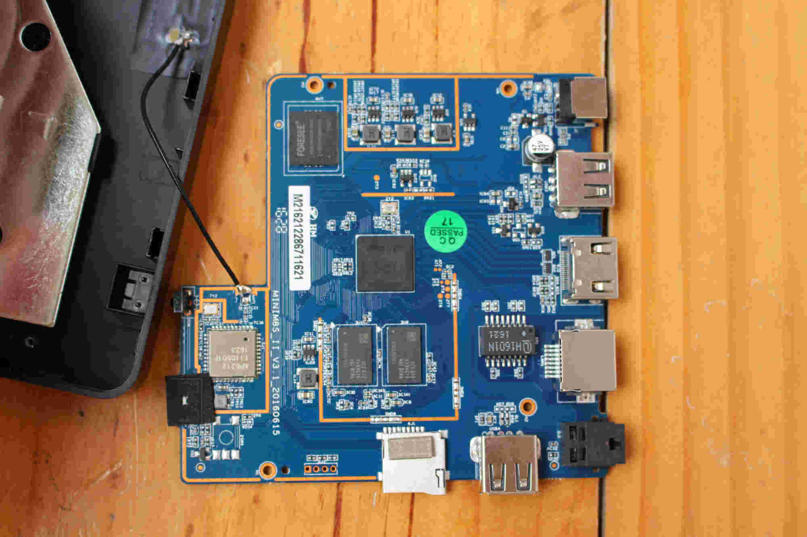
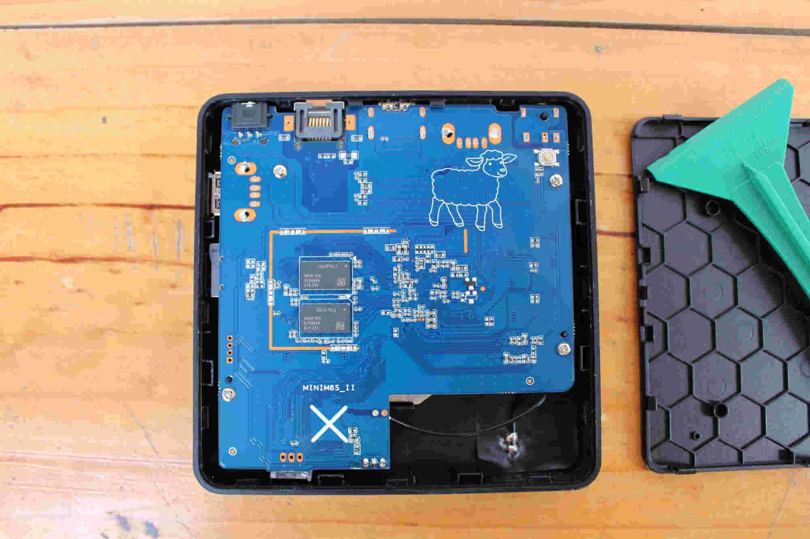
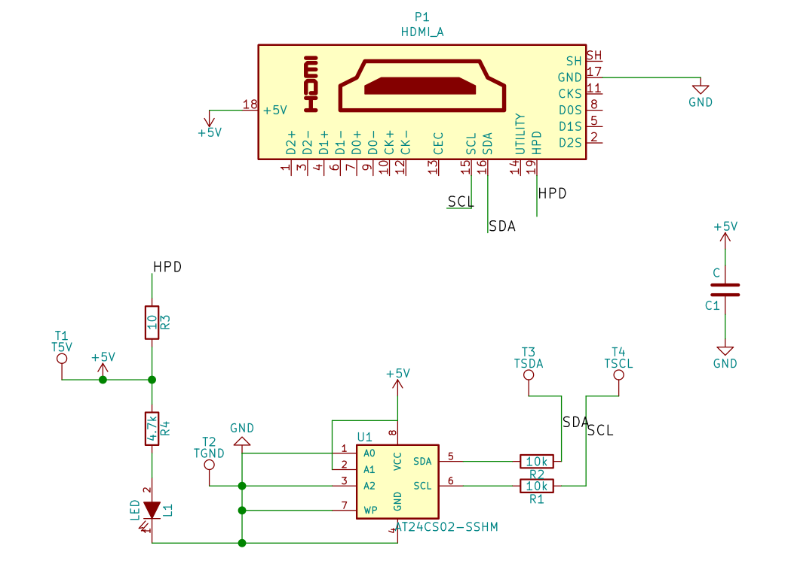

S905X¶
简介¶
在某二手市场入手了一个电视盒子，盒子型号为Trongle X3，主控为S905X。
搜索发现，这个型号的盒子与MINI M8S II这个盒子外形/PCB等完全一致，并且可以直接使用p212设备树启动内核，只有内存容量与EMMC容量略有不同，其外形/PCB等图片如下。
电视盒子内部图片来自这里。
 
数据手册¶
启动流程¶
S905X的启动流程见数据手册中的18.2小节，关于启动流程中提到的recovery信号，可以通过Amlogic HDMI Boot Dongle设备来进行控制，详细的说明可以参考这里，本小节后续内容大都来自此处。
Amlogic BOOTROM在启动过程中会通过HDMI接口中的I2C总线从地址0x52，偏移0xf8(248)处读取8字节内容，如果这8字节内容是boot@USB那么会强制从USB进行启动。相应的，如果内容是boot@SDC和boot@SPI那么会强制从SD卡和SPI进行启动。
Amlogic HDMI Boot Dongle设备的原理图如下图所示，主要元器件为一个EEPROM。

以Linux平台、i2c-dev驱动为例指定从SD卡启动，使用如下方法写入eeprom：
$ cd /sys/bus/i2c/devices/i2c-0
$ echo 24c02 0x52 > new_device
$ cd *-0052
$ echo -n "boot@SDC" | dd of=eeprom bs=1 seek=248
$ dd if=eeprom bs=1 skip=248 | hexdump
注意：从SD卡启动似乎需要使用SDHC规格的SD卡，否则会出现
sd/emmc read data error: ret=16的错误信息，测试发现确实如此，参考这里。
系统烧录¶
电视盒子默认运行的系统是Android，也可以使用网友提供的预编译镜像来运行Debian等发行版。
经过测试，ophub提供的Armbian可以正常启动和使用，详细的下载安装方式可以参考这里。
此型号的电视盒子对应的u-boot与dtb分别为u-boot-s905x-s912.bin和meson-gxl-s905x-p212.dtb。
u-boot编译¶
经过测试，使用上游u-boot的p212_defconfig配置文件编译出的u-boot二进制可以直接使用盒子自带的u-boot运行起来，但是如果要制作可启动的u-boot镜像的话还需要从EMMC中导出自带的u-boot，随后提取出BL2x、BL3x等并进行进一步处理，简单流程如下:
$ dd if=/dev/block/bootloader of=bootloader.dump
$ dd if=bootloader.dump of=dump.bin bs=512 skip=1
$ cd gxlimg && mkdir images
$ ./gxlimg -e ../dump.bin images
$ ./gxlimg -t bl3x -c u-boot-dtb.bin images/u-boot.bin.enc
$ ./gxlimg -t fip --bl2 images/bl2.sign --bl30 images/bl30.enc --bl31 images/bl31.enc --bl33 images/u-boot.bin.enc images/gxl-boot.bin
$ # dd to sd card
$ dd if=images/gxl-boot.bin of=/dev/sdX bs=512 seek=1
上述流程的基本原理是使用原有镜像中的BL2x、BL3x等部分配合自行编译出的u-boot，将其组合成一个新的可启动的bootloader，详细原理及介绍可以参考这里和这里
参考链接¶
Mini M8S II TV Box (Amlogic S905X) Review – Part 1: Unboxing and Teardown